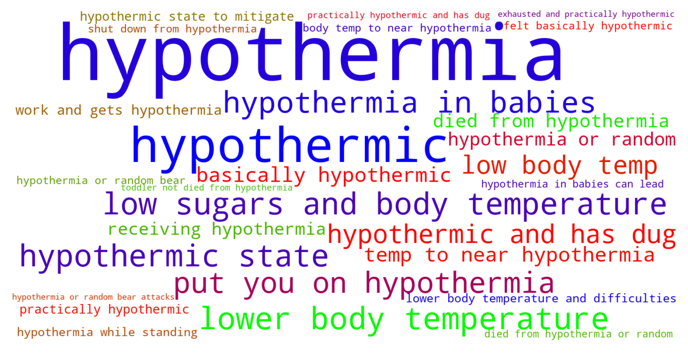
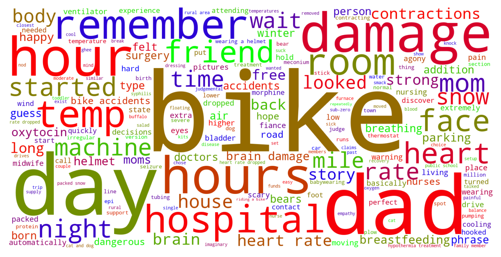

Jump to section:
Samples from Social CorpusHits per UMLS Alias on Social Corpus
Word Cloud Comparison
Embedding Space Comparison
Nearest Neighbors by Semantic Type
Related Analysed Concepts
Samples from Social Corpus
I don't know the exact order of the first few treatments you received , but I think it was like this : they put you on hypothermia treatment , which chilled your body to prevent further brain damage ( hypoxic-ischemic encephalopathy , or HIE ) .
Confidence: 0.761. Reddit link
He had a few low blood sugars and slightly low body temp in the first couple of days .
Confidence: 0.744. Reddit link
I've left it alone ... if he gets in an accident on the way to work and gets hypothermia while standing on the side of the road that's what happens I guess .
Confidence: 0.675. Reddit link
The process my son underwent is called ' Cooling ' , or therapeutic hypothermia .
Confidence: 1.000. Reddit link
As for me , my blood pressure dropped during the surgery and I felt basically hypothermic .
Confidence: 0.650. Reddit link
He was in an induced coma , induced hypothermia and on an NG tube .
Confidence: 1.000. Reddit link
After a very uneventful pregnancy , Rowan had an unexpectedly dramatic entrance into this world ( severe meconium aspiration , hypothermia treatment , ECMO , NICU for over a month ) , and I'd always intended to share his birth story with this subreddit .
Confidence: 1.000. Reddit link
I know hypothermia in babies can lead to brain and organ damage .
Confidence: 0.638. Reddit link
After 20 minutes of that I took off a blanket and then my body felt like I had hypothermia .
Confidence: 1.000. Reddit link
They put her on 72 hours of cooling , which basically means they lower her body temp to near hypothermia to prevent further damage .
Confidence: 0.650. Reddit link
Hits per UMLS Alias on Social Corpus
-
hypothermia
26 hits
-
hypothermic
9 hits
-
body temperature low
3 hits
-
state hypothermia
2 hits
-
hypothermia finding
1 hits
-
low body temperature
1 hits
-
hypothermia natural
0 hits
-
below normal body temperature
0 hits
-
temperature body decrease
0 hits
-
body temperature decreased
0 hits
-
decreased body temperature
0 hits
-
temperature decreased body
0 hits
-
hypopyrexia
0 hits
-
body temperature below normal
0 hits
-
subnormal temperature
0 hits
-
temperature subnormal
0 hits
-
decreased core body temperature
0 hits
-
subnormal temperatures
0 hits
-
abnormally low body temperature
0 hits
-
hypothermias
0 hits
Word Cloud Comparison
Keywords matching C0020672
Keywords matched against concept. Word size represents frequency.
Keywords co-occurring with C0020672
Co-occurrence is measured at the document-level (i.e. Reddit submissions). Frequencies are normalized to account for keywords common to all CUIs.
Embedding Space Comparison
T-SNE comparison for word embeddings learned from medical domain (EuroPMC) and social media (Reddit) independently.
Pearson correlation for union of closest 1000 neighbors: -0.246
Nearest Neighbors by Semantic Type
Most similar concepts in each of the selected UMLS semantic types. Based on concept embeddings from social corpus.
T061 (Therapeutic or Preventive Procedure)
-
C0020674
Hypothermia induced
0.893 Similarity
-
C0457548
Control room temperature
0.738 Similarity
-
C0412806
Regulation temperature
0.718 Similarity
-
C0554804
Assisted breathing
0.634 Similarity
-
C0199741
Newborn phototherapy
0.607 Similarity
-
C0021459
Breathing treatments
0.602 Similarity
-
C1260866
Blood oxygenator
0.602 Similarity
-
C0199451
Cpap
0.598 Similarity
T046 (Pathologic Function)
-
C0242184
Decreased oxygen supply
0.752 Similarity
-
C4075684
Hypoxemia during surgery
0.700 Similarity
-
C3203358
Under breathing
0.601 Similarity
-
C0034065
Pulmonary embolism
0.591 Similarity
-
C0001122
Acidosis
0.591 Similarity
-
C0269810
Sepsis during labor
0.591 Similarity
-
C0034063
Pulmonary edema
0.572 Similarity
-
C0020542
Pulmonary hypertension
0.572 Similarity
T079 (Temporal Concept)
-
C5204315
Time second temperature
0.720 Similarity
-
C0205178
Acute
0.527 Similarity
-
C0439600
Remitting
0.509 Similarity
-
C3494202
Time treatment
0.504 Similarity
-
C0439590
Prolonged
0.502 Similarity
-
C2936491
Peripartum
0.499 Similarity
-
C2826771
Birth year
0.497 Similarity
-
C0032790
After surgery
0.496 Similarity
T184 (Sign or Symptom)
-
C0015967
Fever
0.698 Similarity
-
C0003578
Apnea
0.643 Similarity
-
C0242706
Oxygen stress breathing
0.622 Similarity
-
C0700200
Presyncope
0.621 Similarity
-
C0476273
Respiratory distress
0.609 Similarity
-
C0553668
Breathing labor
0.569 Similarity
-
C0221161
Breathing shallow
0.568 Similarity
-
C0013404
Trouble breathing
0.561 Similarity
T032 (Organism Attribute)
-
C0005903
Temperature
0.692 Similarity
-
C0805393
Breathing spontaneous
0.545 Similarity
-
C0575118
Normal posture
0.487 Similarity
-
C0005612
Weight baby
0.486 Similarity
-
C0005902
Body surface area
0.481 Similarity
-
C0005890
Stature
0.474 Similarity
-
C0949285
Antibiotic resistance
0.469 Similarity
-
C3714565
Physical condition
0.455 Similarity
T047 (Disease or Syndrome)
-
C0036690
Sepsis
0.673 Similarity
-
C1566050
Severe jaundice neonate
0.626 Similarity
-
C4704910
Sepsis during pregnancy
0.612 Similarity
-
C0004509
Azoospermia
0.600 Similarity
-
C0009952
Febrile seizure
0.600 Similarity
-
C0159020
Fits newborn
0.598 Similarity
-
C0878544
Cardiomyopathy
0.594 Similarity
-
C0032326
Pneumothorax
0.585 Similarity
T039 (Physiologic Function)
-
C0035203
Ventilation
0.664 Similarity
-
C1456599
Lungs breathing
0.566 Similarity
-
C0282498
Heat responses
0.493 Similarity
-
C0025320
Change
0.493 Similarity
-
C0005775
Circulation
0.478 Similarity
-
C1514892
Resistance process
0.461 Similarity
-
C0232338
Blood flow
0.456 Similarity
-
C3179159
Sedative effects
0.453 Similarity
T074 (Medical Device)
-
C0462877
Oxygen giving set
0.662 Similarity
-
C3696780
Tube oxygen
0.648 Similarity
-
C0181744
Oxygen mask
0.602 Similarity
-
C0030067
Oxygenator
0.595 Similarity
-
C0184351
Warming blanket
0.575 Similarity
-
C0042497
Respirator
0.569 Similarity
-
C0492230
Support breathing tube
0.553 Similarity
-
C0087153
Ventilator
0.549 Similarity
T201 (Clinical Attribute)
-
C0429622
Oxygen supply
0.659 Similarity
-
C0231832
Breathing rate
0.641 Similarity
-
C0521982
Successful treatment
0.548 Similarity
-
C0012655
Predisposition
0.545 Similarity
-
C1519453
Spiculation
0.521 Similarity
-
C0035234
Breathing sound
0.516 Similarity
-
C3827727
Undetectable
0.491 Similarity
-
C0442709
End diastolic
0.485 Similarity
T044 (Molecular Function)
-
C0369768
Oxygen saturation
0.650 Similarity
-
C0887940
Gene arrangements
0.449 Similarity
-
C0086321
Cycle futile
0.424 Similarity
-
C1749457
Ligands activity
0.422 Similarity
-
C1150342
Dopachrome rearranging enzyme
0.413 Similarity
-
C0301647
Strand breaks
0.388 Similarity
-
C1721104
Breaks dna
0.373 Similarity
-
C0010357
Cross reactive
0.369 Similarity
T037 (Injury or Poisoning)
-
C0018843
Overheating
0.636 Similarity
-
C0005604
Traumatic birth
0.523 Similarity
-
C0417108
Jump from burning hospital
0.517 Similarity
-
C0269858
Traumatic lesion during delivery
0.517 Similarity
-
C1959898
Traumatic injury during pregnancy
0.514 Similarity
-
C0876926
Traumatic brain damage
0.510 Similarity
-
C1283106
Fourth degree burn injury
0.506 Similarity
-
C0332666
Injuries old
0.496 Similarity
T048 (Mental or Behavioral Dysfunction)
-
C0563172
Dangerous plans
0.628 Similarity
-
C0036857
Severe mental handicap
0.553 Similarity
-
C0234985
Cognitive decline
0.551 Similarity
-
C0270327
Bed wetting
0.526 Similarity
-
C0025362
Mental retardation
0.524 Similarity
-
C0010598
Affective personality
0.519 Similarity
-
C0003635
Apraxia
0.514 Similarity
-
C0338927
Hospitalism
0.501 Similarity
T042 (Organ or Tissue Function)
-
C1160388
Respiratory tube development
0.604 Similarity
-
C0231940
Oxygenation
0.599 Similarity
-
C0005778
Clotting
0.552 Similarity
-
C0043229
Breathing work
0.541 Similarity
-
C0232102
Blood fluidity
0.523 Similarity
-
C1959585
Heart rate control
0.506 Similarity
-
C0013010
Brain laterality
0.484 Similarity
-
C0920880
Stabilizer
0.479 Similarity
T041 (Mental Process)
-
C0009647
Conditioned
0.598 Similarity
-
C2370884
Emotional regulation
0.553 Similarity
-
C0870135
Anger control
0.549 Similarity
-
C0043012
Vigilant
0.494 Similarity
-
C3838995
Ability recognize symptoms
0.484 Similarity
-
C0004448
Aware
0.479 Similarity
-
C0004056
Aspirations
0.478 Similarity
-
C4279941
Critical thinking
0.469 Similarity
T023 (Body Part, Organ, or Organ Component)
-
C0024109
Lung
0.574 Similarity
-
C0007776
Grey matter
0.564 Similarity
-
C0034052
Pulmonary arteries
0.556 Similarity
-
C0034086
Pulmonary valve
0.552 Similarity
-
C0225730
Left lung
0.550 Similarity
-
C0040578
Trachea
0.549 Similarity
-
C0921178
Right frontalis
0.548 Similarity
-
C0448155
Entire body axis
0.541 Similarity
T031 (Body Substance)
-
C0225379
Upper respiratory fluid
0.574 Similarity
-
C0007806
Spinal fluid
0.499 Similarity
-
C0038984
Sweat
0.499 Similarity
-
C0370199
Aspirate
0.489 Similarity
-
C0162371
Cord blood
0.461 Similarity
-
C0440739
Mixed venous blood
0.450 Similarity
-
C0032105
Plasma
0.441 Similarity
-
C2983684
All tissues
0.437 Similarity
T019 (Congenital Abnormality)
-
C0000768
Birth defect
0.559 Similarity
-
C0149530
Congenital heart block
0.548 Similarity
-
C0266449
Brain malformation
0.541 Similarity
-
C0265783
Underdeveloped lung
0.540 Similarity
-
C0152021
Congenital heart disease
0.529 Similarity
-
C0332941
Corrected transposition
0.517 Similarity
-
C0003492
Coarctation
0.511 Similarity
-
C3536558
Complex congenital heart defect
0.507 Similarity
T005 (Virus)
-
C3743464
Mycobacteriophage whirlwind
0.552 Similarity
-
C0597404
Respiratory virus
0.542 Similarity
-
C0205939
Cold virus common
0.514 Similarity
-
C3768023
Mycobacteriophage conspiracy
0.508 Similarity
-
C4415400
Phage wrath
0.431 Similarity
-
C5058350
Fairfax lookout virus
0.399 Similarity
-
C0035236
Rsv
0.390 Similarity
-
C0042776
Virus
0.380 Similarity
T049 (Cell or Molecular Dysfunction)
-
C4725191
Stop lost
0.540 Similarity
-
C0544885
Stop gain
0.456 Similarity
-
C1705285
Mutated
0.440 Similarity
-
C0002938
Aneuploidy
0.371 Similarity
-
C0040715
Translocation
0.368 Similarity
-
C0008625
Chromosomal abnormality
0.362 Similarity
-
C0333714
Reciprocal translocation
0.357 Similarity
-
C4725190
Start lost
0.355 Similarity
T060 (Diagnostic Procedure)
-
C0033053
Prenatal diagnoses
0.520 Similarity
-
C1704567
Still point
0.514 Similarity
-
C0596473
Detection early
0.498 Similarity
-
C0195324
Cone biopsy
0.487 Similarity
-
C0920688
Cancer diagnosis
0.487 Similarity
-
C0150496
Heart monitoring
0.485 Similarity
-
C0004398
Autopsy
0.481 Similarity
-
C0871813
Medical diagnosis
0.468 Similarity
T059 (Laboratory Procedure)
-
C0545131
Cbc diff
0.518 Similarity
-
C0200633
Seg blood count
0.509 Similarity
-
C0023901
Liver tests
0.498 Similarity
-
C0368930
Clotting time
0.487 Similarity
-
C1439852
Incubating
0.485 Similarity
-
C0344395
Bilirubin levels
0.483 Similarity
-
C0162676
Emit
0.476 Similarity
-
C0037793
Specimen treatment
0.468 Similarity
T067 (Phenomenon or Process)
-
C0023983
Long term effects
0.517 Similarity
-
C0868945
Deterioration
0.498 Similarity
-
C0042491
Air ventilation
0.495 Similarity
-
C0677038
Increase pressure
0.482 Similarity
-
C0337240
Fall while being carried
0.458 Similarity
-
C0870455
Early childhood development
0.448 Similarity
-
C0035020
Relapse
0.438 Similarity
-
C0563547
Pressure change
0.433 Similarity
T054 (Social Behavior)
-
C0679426
Incompatibility
0.514 Similarity
-
C0282657
Infibulations
0.500 Similarity
-
C0597728
Protected sex
0.475 Similarity
-
C0871858
Pragmatic
0.460 Similarity
-
C0814584
Controls parental
0.455 Similarity
-
C0582101
Talking about dying
0.444 Similarity
-
C0686975
Trouble with law
0.443 Similarity
-
C0687116
Role mother
0.432 Similarity
T034 (Laboratory or Test Result)
-
C5201036
Low platelets
0.505 Similarity
-
C0580945
Blood pressure standing
0.473 Similarity
-
C0741132
Antibody positive
0.470 Similarity
-
C0241988
M spike
0.461 Similarity
-
C0580944
Lying blood pressure
0.460 Similarity
-
C0428255
Lead levels
0.459 Similarity
-
C0019029
Hemoglobin levels
0.456 Similarity
-
C2266672
Clotting time finding
0.456 Similarity
T100 (Age Group)
-
C3494262
Extremely preterm infant
0.504 Similarity
-
C4551581
Full term baby
0.497 Similarity
-
C0021289
Newborn
0.495 Similarity
-
C0682054
Mature adult
0.447 Similarity
-
C4048294
Preterm baby
0.437 Similarity
-
C0680085
Early adulthood
0.418 Similarity
-
C0596728
65 years old
0.381 Similarity
-
C0021270
Baby
0.379 Similarity
T101 (Patient or Disabled Group)
-
C0008098
Child hospitalized
0.494 Similarity
-
C1456639
Living with cancer
0.486 Similarity
-
C0871503
Dying patients
0.484 Similarity
-
C4727511
Women who have mastectomy
0.469 Similarity
-
C1516213
Cancer patient
0.459 Similarity
-
C0683995
Drug exposed child
0.458 Similarity
-
C0021562
Inpatient
0.444 Similarity
-
C0233363
Monoamniotic twins
0.440 Similarity
T007 (Bacterium)
-
C0018154
Gram positive bacteria
0.491 Similarity
-
C0022828
L forms
0.415 Similarity
-
C0004611
Bacteria
0.399 Similarity
-
C3801085
Enorma
0.396 Similarity
-
C0995648
Genus quinella
0.389 Similarity
-
C0995705
Frankia
0.385 Similarity
-
C0597134
Flora oral
0.356 Similarity
-
C1015849
Wigglesworthia
0.347 Similarity
T018 (Embryonic Structure)
-
C0440731
Fetal brain
0.484 Similarity
-
C0231024
Neural tube
0.451 Similarity
-
C0043544
Fertilized egg
0.438 Similarity
-
C0553522
Cord placenta umbilical
0.423 Similarity
-
C1278988
Entire placenta
0.406 Similarity
-
C1281743
Blastocysts
0.396 Similarity
-
C0015965
Fetal
0.389 Similarity
-
C0041637
Umbilical vein
0.387 Similarity
T190 (Anatomical Abnormality)
-
C4025734
Anomaly scalp
0.473 Similarity
-
C0920299
Overriding toe
0.451 Similarity
-
C3887590
Stricture ureter
0.449 Similarity
-
C0332482
Distortion
0.445 Similarity
-
C0266785
Umbilical cord issue
0.443 Similarity
-
C0016169
Sinus
0.438 Similarity
-
C0240063
Keyhole iris
0.435 Similarity
-
C0019294
Inguinal hernia
0.415 Similarity
T195 (Antibiotic)
-
C0003232
Antibiotics
0.445 Similarity
-
C0723285
Septa
0.428 Similarity
-
C0279516
Antibacterial
0.417 Similarity
-
C0013090
Doxycycline
0.406 Similarity
-
C0718575
Antibiotics ear
0.385 Similarity
-
C1564058
Roxi basics
0.340 Similarity
-
C0718950
Biomox
0.318 Similarity
-
C0701901
Baypen
0.313 Similarity
T200 (Clinical Drug)
-
C3218395
Papain pill
0.424 Similarity
-
C0723917
Triple antibiotic ointment
0.395 Similarity
-
C1163679
Injections sterile water
0.369 Similarity
-
C0599396
Sleeping pills
0.368 Similarity
-
C3216620
Progesterone vaginal product
0.358 Similarity
-
C4048176
Oxytocin injection
0.343 Similarity
-
C1242003
Mol iron tablets
0.335 Similarity
-
C0718788
Baby oil top
0.326 Similarity